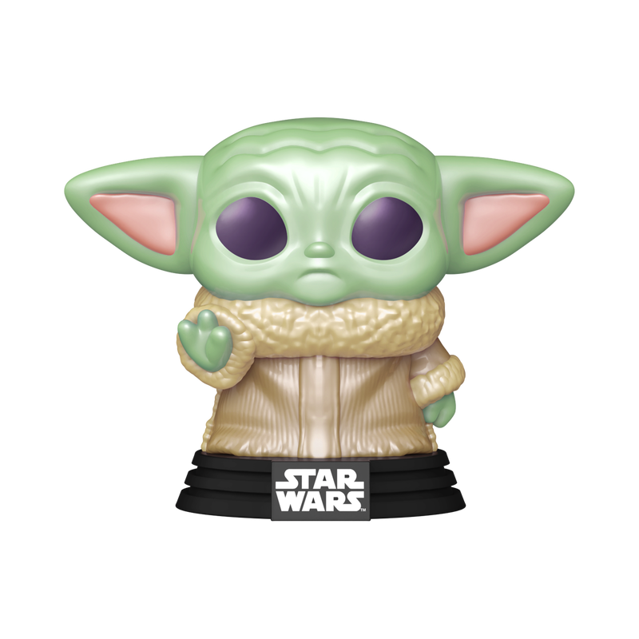

Cabeças
A principal característica dos Funko é a cabeça grande em relação ao corpo, com traços simplificados.
Variedade
Existem Funkos de várias franquias, como filmes, séries, desenhos animados, quadrinhos, jogos, músicos e figuras da cultura pop.

Material
São feitos principalmente de vinil, o que os torna duráveis e leves.